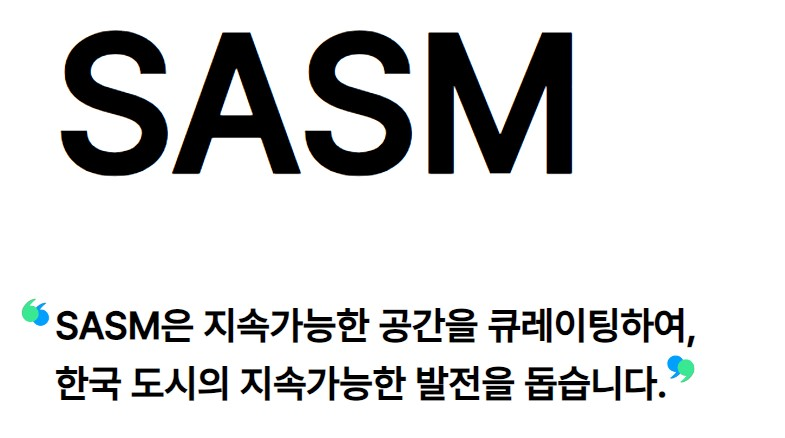

프로젝트 사슴

- 기본적으로 Django 에서 제공되는 컴포넌트인 model, view 등에 덧붙여 selector,
service 를 이용하여 데이터를 쿼리 및 필터링하는 방식으로 Django REST API 구현
- 주로 Django 의 ORM 을 이용하여 서브 쿼리를 통한 데이터 베이스 쿼리를 구축하거나
patch, post, get, delete 등 CRUD 를 이용한 핵심 기능 API 구현
- ORM 의 경우, 현재 로그인한 사용자가 포레스트, 큐레이션, 스토리 글을 조회할 시
해당 글의 작성자를 팔로우하고 있는지에 대한 정보를 얻기 위해 Django 데이터베이스
표현식인 Exits 를 사용하여 many-to-many 관계인 작성자(writer)와 사용자(user) 간의
팔로우 관계가 성립하는지 여부를 받아오는 작업을 진행
- 앱 출시 완료 후 부가적으로 요구되는 기능이나 버그 추가 및 수정
- silk 툴을 사용하여 쿼리 최적화 및 리팩토링 작업 수행
- 기능 구현 작업 외에도 커밋 메시지와 이슈를 정해진 규격에 맞춰 작성하거나
프론트엔드와의 원활한 작업을 위해 @swagger_auto_schema 를 이용하여 API 문서를
제작하는 등 협업 관련 작업 수행
사용언어 및 개발환경
서버 : Django, Docker, AWS, Nginx
웹 : React, JavaScript
어플리케이션 : React-Native, Typescript